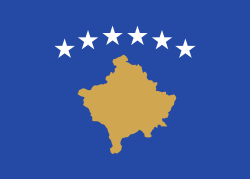

Kosovo,[a] officially the Republic of Kosovo,[b]  is a landlocked country in Southeast Europe with partial diplomatic recognition. It is bordered by Albania to the southwest, Montenegro to the west, Serbia to the north and east, and North Macedonia to the southeast. It covers an area of 10,887 km2 (4,203 sq mi) and has a population of approximately 1.6 million. Kosovo has a varied terrain, with high plains along with rolling hills and mountains, some of which have an altitude over 2,500 m (8,200 ft). Its climate is mainly continental with some Mediterranean and alpine influences.[15] Kosovo's capital and most populous city is Pristina; other major cities and urban areas include Prizren, Ferizaj, Gjilan and Peja